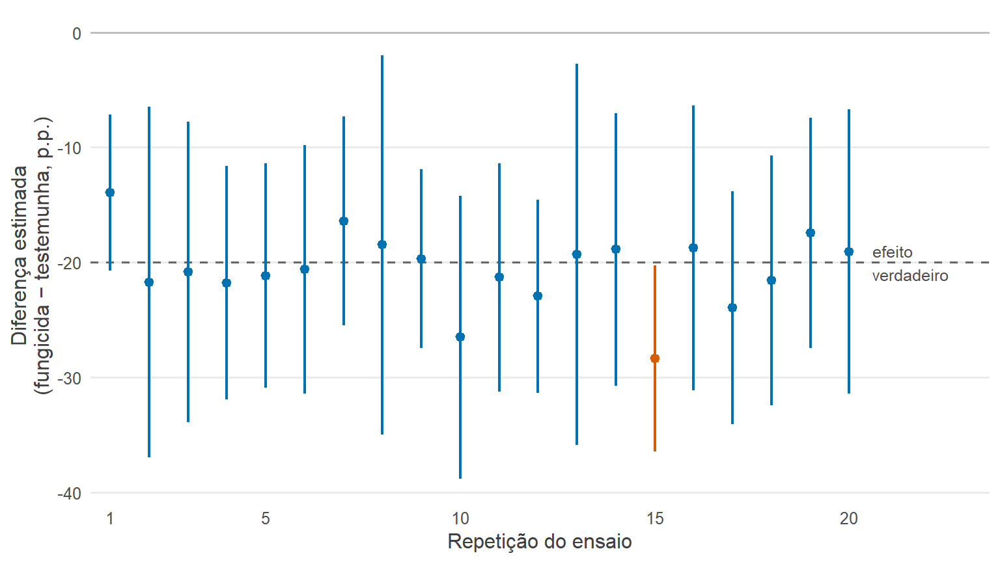
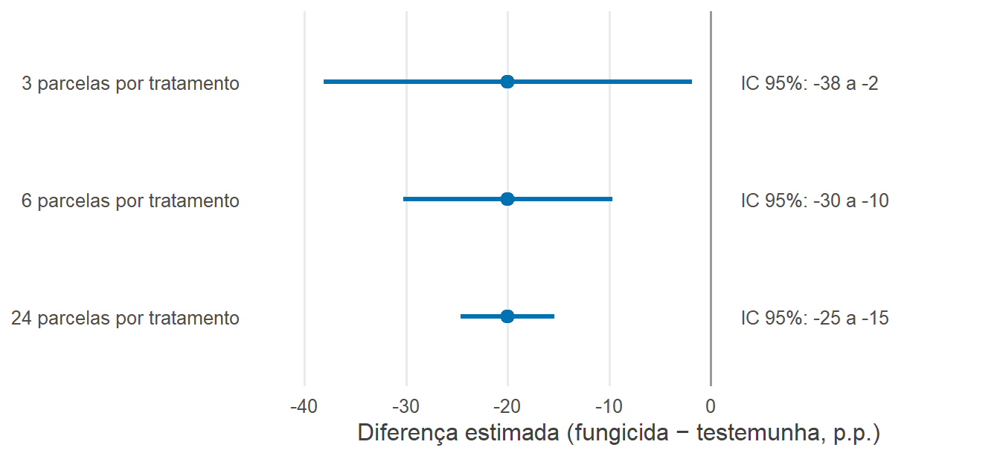
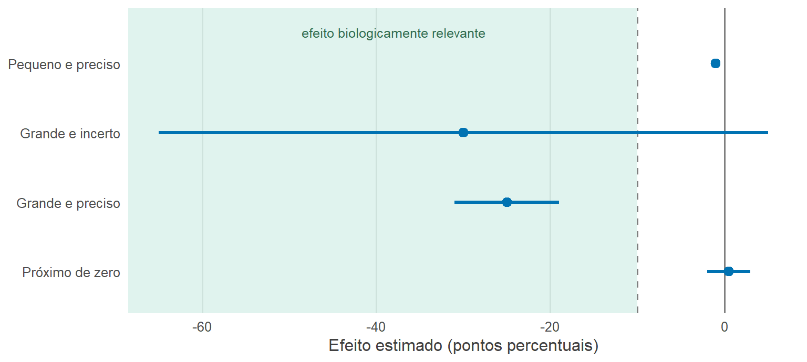

6 Como tiramos conclusões científicas?
6.1 Objetivos de aprendizagem
Importante
Ao concluir este capítulo, o leitor deverá ser capaz de:
- explicar a distinção entre população, amostra, parâmetro e estimativa;
- definir a grandeza de interesse científico antes de escolher um método estatístico;
- explicar a variabilidade amostral e a incerteza estatística;
- distinguir estimação de teste de hipóteses;
- interpretar tamanhos de efeito e intervalos de confiança;
- formular hipóteses científicas e estatísticas;
- explicar o significado e as limitações do valor-P;
- distinguir significância estatística de importância biológica;
- reconhecer os erros dos tipos I e II;
- compreender os papéis do poder estatístico e do tamanho da amostra;
- avaliar conclusões científicas com base na magnitude, na incerteza e na relevância biológica dos efeitos estimados.
6.2 Das observações à inferência
Os capítulos anteriores trataram do delineamento de estudos, da organização dos dados, da exploração das observações e da visualização de padrões. Agora enfrentamos uma questão diferente: que conclusões podem ser razoavelmente tiradas dos dados?
Suponha que, em um ensaio de campo, as parcelas pulverizadas com um fungicida tenham tido severidade média de 40%, enquanto as parcelas não tratadas tiveram 60%. A diferença observada é de 20 pontos percentuais. Mas o pesquisador raramente se interessa apenas por essas parcelas específicas nessa safra específica. A verdadeira pergunta é sobre o fungicida: ele reduz a doença, e em quanto, em condições como as do ensaio? Se o ensaio tivesse sido conduzido em outras parcelas da mesma lavoura, com outras plantas, a diferença observada não teria sido exatamente 20 pontos percentuais. Poderia ter sido 14 ou 27.
A diferença observada, portanto, não é o mesmo que o efeito subjacente do fungicida. É uma estimativa desse efeito, influenciada pela variabilidade natural das parcelas, das plantas e da doença. A inferência estatística é o raciocínio que liga o que foi observado ao que queremos saber. Ela responde a perguntas como: Qual é a nossa melhor estimativa do efeito? Com que precisão ele foi estimado? Quais tamanhos de efeito são compatíveis com os dados? Uma diferença desse tamanho poderia surgir plausivelmente se o tratamento não tivesse efeito?
Este capítulo apresenta os conceitos em que esse raciocínio se baseia. Eles são comuns a todos os métodos estatísticos apresentados nos capítulos seguintes, das comparações entre grupos aos modelos não lineares.
Importante
A inferência estatística é o processo de usar os dados observados, junto com pressupostos sobre como esses dados foram gerados, para quantificar o que pode ser razoavelmente concluído além das próprias observações.
6.3 O que queremos estimar?
6.3.1 A questão científica vem primeiro
Um ponto de partida comum na análise de dados é perguntar: “Que teste estatístico devo usar?” Essa pergunta vem cedo demais. Antes de escolher um método, o pesquisador precisa decidir que grandeza responderia à questão biológica.
Considere a questão: Um fungicida reduz a doença? Várias grandezas poderiam respondê-la:
- a diferença na severidade média entre parcelas tratadas e não tratadas na última avaliação;
- a redução relativa da severidade, expressa como porcentagem da testemunha;
- a diferença na incidência da doença em um estádio fenológico específico;
- a diferença na taxa de progresso da doença durante a safra;
- a diferença de produtividade entre parcelas tratadas e não tratadas.
Cada uma dessas grandezas responde a uma pergunta ligeiramente diferente, e cada uma pode levar a uma conclusão diferente. Um fungicida pode reduzir muito a severidade final e ter pouco efeito sobre a produtividade, ou pode atrasar a epidemia sem mudar seu nível final. Escolher a grandeza de interesse é uma decisão científica, e não estatística.
6.3.2 Da questão biológica ao estimando
A grandeza que um estudo pretende conhecer é chamada estimando. Defini-lo com precisão é a ponte entre a questão biológica e a análise estatística. Exemplos de estimandos em Fitopatologia incluem:
- a severidade média de uma cultivar em determinadas condições;
- a diferença entre a severidade média de parcelas tratadas e não tratadas;
- a redução relativa da doença causada por um tratamento;
- a inclinação que relaciona a produtividade à severidade da doença;
- a chance de infecção de plantas expostas a determinada duração de molhamento em relação a plantas expostas a uma duração menor;
- a temperatura em que a infecção é máxima.
Um estimando bem definido especifica o que é comparado, em que unidades, em que momento e em que condições. “O efeito do fungicida” é vago; “a diferença na severidade média (pontos percentuais) entre parcelas pulverizadas com o fungicida A e parcelas não tratadas na última avaliação, sob infecção natural na região-alvo” é um estimando.
Nota
Antes de perguntar “Que teste estatístico devo usar?”, pergunte “Que grandeza eu quero estimar?”
6.3.3 Parâmetro e estimativa
O valor verdadeiro do estimando, que só seria conhecido se pudéssemos observar todas as unidades em todas as condições relevantes, é chamado parâmetro. Ele é fixo, mas desconhecido: por exemplo, a redução média verdadeira da severidade que o fungicida produziria em todas as parcelas que poderiam ter sido usadas no ensaio. O valor calculado a partir dos dados é uma estimativa do parâmetro: por exemplo, a diferença observada de 20 pontos percentuais.
A distinção é central para a inferência. O parâmetro descreve a realidade biológica que queremos compreender; a estimativa é nossa melhor aproximação, obtida a partir de dados limitados. As estimativas variam de estudo para estudo; o parâmetro, não. Os métodos estatísticos quantificam o quanto a estimativa provavelmente se afasta do parâmetro.
6.4 População e amostra
6.4.1 Qual é a população de interesse?
Em estatística, uma população é o conjunto de todas as unidades, ou de todas as observações possíveis, sobre as quais se quer tirar conclusões. Em Fitopatologia, a população raramente significa todas as plantas do mundo. Pode ser:
- plantas de uma cultivar cultivadas em condições definidas de casa de vegetação;
- parcelas em lavouras de uma região produtora-alvo;
- o conjunto de ambientes (safras e locais) em que um fungicida seria usado;
- isolados de uma população do patógeno em um país;
- lavouras comerciais de uma cultura em um estado em determinado ano.
Definir a população faz parte de definir o estimando. Os mesmos dados podem sustentar conclusões sobre uma população e não sobre outra.
6.4.2 O que é uma amostra?
Uma amostra é o conjunto de unidades efetivamente observadas: as parcelas do ensaio, as plantas inoculadas, os isolados coletados, as lavouras visitadas. A inferência é o uso da amostra para aprender sobre a população. Para que seja válida, a amostra precisa representar a população de forma conhecida. Em levantamentos, isso é obtido por amostragem aleatória ou sistemática das unidades da população. Em experimentos, a alocação aleatória dos tratamentos às unidades garante que os grupos de tratamento sejam comparáveis, de modo que as diferenças entre grupos possam ser atribuídas aos tratamentos.
6.4.3 Para onde podemos generalizar?
A população para a qual as conclusões podem ser estendidas é determinada pelo delineamento do estudo (Capítulo 2). Um experimento bem casualizado conduzido em uma lavoura em uma safra sustenta conclusões sobre o efeito do tratamento naquela lavoura e naquela safra. Estendê-las a outras lavouras, cultivares ou safras exige repetir o experimento nessas condições ou supor que o efeito é semelhante — um pressuposto biológico, e não estatístico.
Da mesma forma, um experimento em casa de vegetação com um único isolado sustenta conclusões sobre aquele isolado em condições de casa de vegetação. Um levantamento de lavouras escolhidas por conveniência à beira das estradas pode não representar todas as lavouras de uma região. A casualização dentro de um experimento garante comparações válidas entre tratamentos, mas não garante, por si só, que os resultados se apliquem a todos os ambientes.
Aviso
O escopo da inferência é determinado principalmente por como o estudo foi delineado e por como as unidades experimentais ou observacionais foram obtidas — e não apenas pelo modelo estatístico.
6.5 Por que as estimativas variam?
6.5.1 Variação amostral
Imagine que o ensaio de fungicida pudesse ser repetido muitas vezes, cada vez com um novo conjunto de parcelas da mesma lavoura e da mesma safra. Mesmo que o fungicida tivesse exatamente o mesmo efeito todas as vezes, a diferença observada entre parcelas tratadas e não tratadas variaria: 20 pontos em um ensaio, 15 em outro, 26 em um terceiro. Essa variação surge porque cada ensaio usa parcelas diferentes, que diferem em solo, microclima e inóculo, e plantas diferentes, que diferem em suscetibilidade.
Essa variação entre as estimativas que seriam obtidas a partir de amostras diferentes é chamada variação amostral. Ela afeta toda grandeza estimada: médias, diferenças, proporções, inclinações e correlações. É o motivo pelo qual um único estudo raramente fornece uma resposta definitiva e pelo qual as estimativas sempre devem vir acompanhadas de uma medida de sua incerteza.
6.5.2 Distribuições amostrais
Se pudéssemos registrar as estimativas de muitas repetições hipotéticas de um estudo, sua distribuição seria chamada distribuição amostral da estimativa. Ela descreve o quanto a estimativa varia de amostra para amostra e se tende a estar centrada no valor verdadeiro.
Na prática, um estudo é conduzido uma única vez, e a distribuição amostral não pode ser observada diretamente. A teoria estatística, porém, permite inferir sua forma e sua dispersão a partir de uma única amostra, sob pressupostos sobre como os dados foram gerados. Dois fatos gerais são úteis. Primeiro, estimativas baseadas em mais observações independentes variam menos. Segundo, estimativas baseadas em observações mais variáveis variam mais. Esses dois fatos fundamentam os conceitos de erro padrão, intervalos de confiança e poder estatístico.

6.5.3 Erro padrão
O erro padrão (EP) é o desvio padrão da distribuição amostral de uma estimativa. Em outras palavras, mede o quanto a estimativa variaria tipicamente de uma repetição do estudo para outra. É a medida básica da incerteza de uma estimativa.
Para uma média calculada a partir de \(n\) observações independentes com desvio padrão \(s\), o erro padrão é aproximadamente:
\[ EP = \frac{s}{\sqrt{n}} \]
O erro padrão diminui à medida que aumenta o número de observações independentes, mas devagar: para reduzi-lo à metade, são necessárias quatro vezes mais observações. Toda estimativa, inclusive diferenças, inclinações e proporções, tem seu próprio erro padrão.
6.5.4 Desvio padrão versus erro padrão
O desvio padrão e o erro padrão são frequentemente confundidos, em parte porque ambos são usados para desenhar barras de erro (Capítulo 5). O desvio padrão descreve a variação entre observações individuais: o quanto as parcelas diferem umas das outras. Ele não diminui com mais observações, porque reflete a variabilidade natural do sistema. O erro padrão descreve a incerteza de uma estimativa: com que precisão uma média ou diferença é conhecida. Ele diminui à medida que mais observações independentes são coletadas.
A escolha entre os dois depende da mensagem. Para descrever o quanto parcelas ou plantas são variáveis, relate o desvio padrão. Para descrever com que precisão a média ou o efeito de um tratamento foi estimado, relate o erro padrão ou, de preferência, um intervalo de confiança.
| Grandeza | O que descreve? |
|---|---|
| Desvio padrão | Variação entre observações |
| Erro padrão | Incerteza de uma grandeza estimada |
6.6 Estimação e incerteza
6.6.1 Estimativas pontuais
Uma estimativa pontual é um único valor calculado a partir dos dados como a melhor estimativa do parâmetro: uma severidade média, uma diferença entre médias de tratamentos, uma redução relativa, uma inclinação, uma proporção de plantas infectadas ou uma razão de riscos. As estimativas pontuais respondem à pergunta “quanto?”, mas, sozinhas, nada dizem sobre a confiabilidade da resposta.
6.6.2 Estimativas intervalares
Uma estimativa intervalar fornece uma faixa de valores plausíveis para o parâmetro, junto com a estimativa pontual. Ela comunica tanto a magnitude do efeito quanto a incerteza sobre ele. A estimativa intervalar mais comum é o intervalo de confiança.
6.6.3 Intervalos de confiança
Um intervalo de confiança de 95% é construído por um procedimento que, se o estudo fosse repetido muitas vezes, produziria intervalos contendo o parâmetro verdadeiro em cerca de 95% das repetições. Para um único intervalo calculado a partir dos dados disponíveis, o parâmetro está dentro ou fora; não sabemos qual. Por isso, não é correto dizer que há 95% de probabilidade de o valor verdadeiro estar dentro deste intervalo específico.
Uma interpretação prática é que o intervalo de confiança contém os valores do parâmetro razoavelmente compatíveis com os dados, dado o modelo estatístico. Valores próximos ao centro do intervalo são os mais compatíveis; valores próximos aos limites, menos; valores muito fora do intervalo são pouco compatíveis com os dados. Por exemplo, se um fungicida reduziu a severidade em 20 pontos percentuais, com intervalo de confiança de 95% de 10 a 30 pontos, então reduções entre cerca de 10 e 30 pontos são compatíveis com os dados, enquanto uma redução zero, ou de 40 pontos, não é.
Importante
Um intervalo de confiança deve ser interpretado junto com o efeito estimado. Ele comunica a faixa de tamanhos de efeito razoavelmente compatíveis com os dados e com o modelo estatístico.
6.6.4 Precisão
A largura de um intervalo de confiança reflete a precisão da estimativa. Um intervalo estreito indica uma estimativa precisa; um intervalo largo indica que os dados são compatíveis com uma ampla faixa de efeitos. A precisão aumenta com o número de unidades experimentais independentes e diminui com a variabilidade entre elas. Um bom delineamento aumenta a precisão sem aumentar o número de unidades: o bloqueamento, por exemplo, remove fontes conhecidas de variação da comparação entre tratamentos (Capítulo 2).
Precisão não é o mesmo que exatidão. Uma estimativa pode ser precisa, mas enviesada, como quando as parcelas não tratadas são sistematicamente colocadas na parte mais úmida da lavoura. Os métodos estatísticos quantificam a precisão; somente um bom delineamento protege contra o viés.
6.6.5 Visualizando estimativas e incerteza
Estimativas e seus intervalos de confiança são mostrados de forma eficaz como pontos com linhas horizontais ou verticais representando os intervalos (Capítulo 5). Quando a conclusão principal diz respeito a diferenças entre tratamentos, as próprias diferenças, com seus intervalos, podem ser representadas em relação a uma linha de referência no zero. Esses gráficos tornam fácil ver de uma vez a direção, a magnitude e a precisão de cada efeito.

6.7 Tamanho de efeito
6.7.1 Qual é o tamanho do efeito?
Um tamanho de efeito é uma medida quantitativa da magnitude de um efeito: o quanto um tratamento reduz a doença, o quanto a produtividade diminui por unidade de severidade, com que intensidade a infecção depende da temperatura. Os tamanhos de efeito respondem à pergunta que mais interessa aos pesquisadores e aos usuários da pesquisa: qual é o tamanho do efeito?
Grande parte da comunicação científica tem se concentrado, em vez disso, em saber se um efeito é “estatisticamente significativo”. Essa mudança de ênfase — da existência de um efeito para sua magnitude e precisão — é uma das mensagens centrais deste capítulo.
6.7.2 Efeitos absolutos
Um efeito absoluto é a diferença entre grupos expressa nas unidades da resposta. Se as parcelas não tratadas tiveram 40% de severidade e as tratadas 25%, o efeito absoluto é uma redução de 15 pontos percentuais. Se a produtividade foi de 3200 kg/ha nas parcelas tratadas e de 2800 kg/ha nas não tratadas, o efeito absoluto é de 400 kg/ha. Efeitos absolutos são diretamente interpretáveis e costumam ser o que importa para decisões econômicas.
Para variáveis expressas em porcentagem, a diferença deve ser expressa em pontos percentuais, e não como porcentagem, para evitar confusão: uma mudança de 40% para 25% de severidade é uma redução de 15 pontos percentuais.
6.7.3 Efeitos relativos
Um efeito relativo expressa a diferença como proporção de um valor de referência, geralmente a testemunha. A redução de 40% para 25% de severidade corresponde a uma redução relativa de 15/40 = 37,5%. Na Fitopatologia, os efeitos relativos são muito usados como medidas de eficácia de fungicidas ou de controle da doença.
Os efeitos relativos são úteis para comparar efeitos entre situações com diferentes níveis de doença, mas podem ser enganosos quando o valor de referência é pequeno. Uma redução de 2% para 1% de severidade é uma redução relativa de 50%, mas de apenas um ponto percentual em termos absolutos, o que pode não ter nenhuma importância prática. Relatar efeitos absolutos e relativos fornece o quadro mais completo.
6.7.4 Efeitos padronizados
Efeitos padronizados expressam uma diferença em relação à variabilidade das observações, por exemplo a diferença entre médias dividida pelo desvio padrão. Não têm unidades e são usados principalmente para comparar efeitos medidos em escalas diferentes, como em meta-análises ou cálculos de poder. Como dependem da variabilidade de um estudo específico, os efeitos padronizados são menos diretamente interpretáveis em termos biológicos, e efeitos absolutos ou relativos em unidades naturais são geralmente preferidos ao relatar resultados.
6.7.5 Relevância biológica
Se um efeito é importante depende de suas consequências, que só podem ser julgadas com conhecimento biológico e prático. Um fungicida que reduz a severidade em 5 pontos percentuais pode ser irrelevante se a produtividade não for afetada, ou valioso se a cultura tiver alto valor de mercado e a doença causar perdas diretas de qualidade. Um aumento de um dia no período latente pode ser trivial em um único ciclo, mas substancial ao longo de uma epidemia policíclica. Uma diferença de resistência entre cultivares pode importar para o melhoramento, mesmo que seja pequena demais para importar para o manejo.
Os pesquisadores devem definir, idealmente antes de coletar os dados, o menor efeito que seria biológica ou economicamente relevante. Esse limiar fornece o contexto para interpretar as estimativas e seus intervalos de confiança.
Importante
A evidência estatística trata da incerteza. A importância biológica diz respeito à magnitude e às consequências de um efeito. São perguntas relacionadas, mas não são a mesma pergunta.
6.8 Hipóteses científicas e hipóteses estatísticas
6.8.1 Hipóteses científicas
Como discutido no Capítulo 2, uma hipótese científica é uma proposição biológica que oferece uma explicação ou expectativa: um fungicida reduz a doença porque inibe a germinação dos esporos; uma cultivar tem menos doença porque possui um gene de resistência; a infecção aumenta com a duração do molhamento porque o patógeno precisa de água livre para germinar e penetrar. As hipóteses científicas são avaliadas por meio das predições que geram.
6.8.2 Hipóteses estatísticas
Uma hipótese estatística é um enunciado preciso sobre o valor de um parâmetro em um modelo estatístico. Ela traduz uma predição da hipótese científica em uma forma que pode ser avaliada com dados. Por exemplo, a predição de que parcelas tratadas terão menos doença que parcelas não tratadas pode ser traduzida em um enunciado sobre a diferença entre as severidades médias dos dois grupos.
6.8.3 Hipótese nula
A hipótese nula, \(H_0\), geralmente afirma que não há efeito ou diferença: a severidade média das parcelas tratadas é igual à das não tratadas, ou a inclinação que relaciona doença e produtividade é zero. A hipótese nula não é necessariamente aquilo em que o pesquisador acredita; é um modelo de referência com o qual os dados são comparados.
6.8.4 Hipótese alternativa
A hipótese alternativa, \(H_A\), afirma o que se considera caso a hipótese nula não seja sustentada, geralmente que existe uma diferença ou um efeito. Ela pode ser bilateral (as médias diferem, em qualquer direção) ou unilateral (a média tratada é menor).
Para uma comparação entre duas médias populacionais:
\[ H_0: \mu_1 - \mu_2 = 0 \]
\[ H_A: \mu_1 - \mu_2 \neq 0 \]
Essa é uma representação estatística de uma comparação científica, e não a própria hipótese científica. Rejeitar \(H_0\) indica que os dados não são compatíveis com uma diferença zero sob o modelo; não demonstra o mecanismo biológico proposto pela hipótese científica, nem diz qual é o tamanho da diferença.
6.9 Teste de hipóteses
6.9.1 A lógica de um teste estatístico
Um teste estatístico segue uma lógica indireta. Começa supondo que a hipótese nula é verdadeira, junto com os demais pressupostos do modelo estatístico. Em seguida, pergunta quão compatíveis os dados observados são com esse modelo. Se dados como os observados seriam muito incomuns sob o modelo nulo, isso é tomado como evidência contra ele. Se seriam comuns, os dados fornecem pouca evidência contra o modelo nulo — o que não significa que a hipótese nula seja verdadeira.
6.9.2 Estatísticas de teste
Uma estatística de teste é um número calculado a partir dos dados que resume o quanto as observações se afastam do que a hipótese nula prevê, em relação à incerteza da estimativa. Muitas estatísticas de teste têm a forma geral:
\[ \text{estatística de teste} = \frac{\text{estimativa} - \text{valor sob } H_0}{\text{erro padrão da estimativa}} \]
A estatística \(t\) usada para comparar duas médias, por exemplo, é a diferença observada dividida pelo seu erro padrão. Valores grandes, positivos ou negativos, indicam que a estimativa está longe do valor nulo em relação à sua incerteza.
6.9.3 O valor-P
O valor-P é a probabilidade, calculada supondo que o modelo nulo seja verdadeiro, de obter uma estatística de teste pelo menos tão extrema quanto a observada. Valores-P pequenos indicam que os dados observados seriam incomuns se o modelo nulo fosse verdadeiro; valores-P grandes indicam que não seriam incomuns.
O valor-P depende tanto do tamanho do efeito quanto da sua precisão. Um efeito pequeno estimado com muita precisão, a partir de muitas observações, pode produzir um valor-P muito pequeno; um efeito grande estimado com pouca precisão pode produzir um valor-P grande.
Importante
Um valor-P mede a compatibilidade dos dados observados, ou de dados mais extremos, com um modelo estatístico especificado que inclui a hipótese nula. Ele não é a probabilidade de a hipótese nula ser verdadeira.
6.9.4 O que um valor-P não nos diz
Um valor-P não nos diz diretamente:
- a probabilidade de a hipótese ser verdadeira;
- a probabilidade de os resultados terem ocorrido “por acaso”;
- a magnitude do efeito biológico;
- se o efeito é cientificamente importante;
- se o experimento foi bem delineado;
- se os resultados serão reprodutíveis.
Essas limitações foram enfatizadas em uma declaração da Associação Americana de Estatística (ASA) sobre valores-P (Wasserstein e Lazar 2016).
6.9.5 Significância estatística
Na prática convencional, um resultado é chamado “estatisticamente significativo” quando o valor-P é menor que um limiar preestabelecido, chamado nível de significância, \(\alpha\). O limiar mais comum é \(\alpha = 0{,}05\). Essa convenção foi popularizada no início do século XX como um guia aproximado de quais resultados mereciam mais atenção, e não como uma regra para decidir o que é verdadeiro. Com o tempo, porém, o limiar passou a ser tratado como uma fronteira entre resultados que “funcionam” e resultados que “não funcionam”.
6.9.6 O problema dos limiares
A evidência não muda bruscamente em um valor arbitrário. Considere dois experimentos:
P = 0,049 → "significativo"
P = 0,051 → "não significativo"Os dois resultados fornecem evidências praticamente idênticas, mas a dicotomia leva a conclusões opostas. Tratar os limiares como decisivos incentiva a exagerar resultados logo abaixo de 0,05, descartar resultados logo acima e escolher análises que produzam valores-P abaixo dele. Por isso, muitos estatísticos recomendam relatar os valores-P exatos, interpretá-los como uma medida contínua de compatibilidade com o modelo nulo e concentrar-se nos tamanhos de efeito e em seus intervalos de confiança (Amrhein et al. 2019; Wasserstein e Lazar 2016).
Aviso
As conclusões científicas não devem mudar bruscamente porque um valor-P ficou logo acima ou logo abaixo de um limiar arbitrário.
6.10 Significância estatística versus importância biológica
Essa distinção é particularmente importante nas ciências biológicas aplicadas.
A significância estatística diz respeito a se os dados são compatíveis com a ausência de efeito. A importância biológica diz respeito a se o efeito é grande o suficiente para importar. São dimensões independentes: um efeito pode ser estatisticamente detectável, mas biologicamente trivial, ou biologicamente grande, mas estimado com imprecisão demais para conclusões firmes. Considerar juntos a estimativa, seu intervalo de confiança e o menor efeito biologicamente relevante leva a quatro situações típicas.

6.10.1 Efeitos pequenos, mas estimados com precisão
Um levantamento de milhares de lavouras constata que um sistema de preparo do solo está associado a 1 ponto percentual a menos de doença, com intervalo de confiança de 0,6 a 1,4 ponto e P < 0,001. O efeito é claramente diferente de zero, mas todo o intervalo está abaixo de qualquer efeito relevante para o manejo da doença. A evidência é forte; o efeito é pequeno.
6.10.2 Efeitos grandes, mas incertos
Um pequeno experimento em casa de vegetação constata que um agente de controle biológico reduziu a severidade em 30 pontos percentuais, com intervalo de confiança de −5 a 65 pontos e P = 0,09. O efeito estimado é grande, mas os dados são compatíveis com qualquer coisa, desde nenhum efeito (ou um leve aumento) até uma redução muito grande. A conclusão adequada não é que o agente “não funciona”, mas que a evidência é inconclusiva e que é necessário um experimento maior ou repetido.
6.10.3 Efeitos grandes e estimados com precisão
Um ensaio de campo bem repetido constata que um fungicida reduziu a severidade em 25 pontos percentuais, com intervalo de confiança de 19 a 31 pontos. Todo o intervalo está na faixa de efeitos biologicamente relevantes. Essa é a situação mais forte: o efeito está claramente presente e é claramente importante.
6.10.4 Efeitos próximos de zero
Um ensaio bem repetido encontra uma diferença de 0,5 ponto percentual entre dois fungicidas, com intervalo de confiança de −2 a 3 pontos. Os dados são compatíveis com ausência de diferença, e também com pequenas diferenças em qualquer direção, mas não com nenhuma diferença grande o suficiente para importar. Aqui, um resultado “não significativo” fornece evidência útil de que os dois produtos têm desempenho semelhante, porque o intervalo é estreito. Essa conclusão só é possível porque a estimativa é precisa.
6.11 Erros nas decisões estatísticas
Quando um teste é usado para tomar uma decisão — rejeitar ou não rejeitar a hipótese nula —, dois tipos de erro são possíveis.
6.11.1 Erro do tipo I
O erro do tipo I ocorre quando a hipótese nula é rejeitada embora seja verdadeira: concluir que um fungicida reduz a doença quando, na verdade, ele não tem efeito. A probabilidade de um erro do tipo I, quando a hipótese nula é verdadeira, é igual ao nível de significância \(\alpha\). Com \(\alpha = 0{,}05\), cerca de 1 em cada 20 testes de hipóteses nulas verdadeiras produzirá um resultado “significativo”.
6.11.2 Erro do tipo II
O erro do tipo II ocorre quando a hipótese nula não é rejeitada embora exista um efeito relevante: concluir que não há evidência de efeito do fungicida quando ele, na verdade, reduz a doença. A probabilidade de um erro do tipo II, denotada \(\beta\), depende do tamanho do efeito verdadeiro, da variabilidade dos dados e do número de unidades experimentais independentes. Experimentos pequenos e com poucas repetições têm alta probabilidade de erros do tipo II.
| Realidade | Rejeitar \(H_0\) | Não rejeitar \(H_0\) |
|---|---|---|
| \(H_0\) verdadeira | Erro do tipo I | Decisão correta |
| \(H_0\) falsa | Decisão correta | Erro do tipo II |
6.11.3 Por que “não significativo” não significa “sem efeito”
Um valor-P maior que 0,05 significa que os dados são compatíveis com ausência de efeito. Não significa que os dados mostram que não há efeito. Os mesmos dados podem ser igualmente compatíveis com um efeito substancial. Essa é a diferença entre ausência de evidência e evidência de ausência.
O intervalo de confiança revela qual situação se aplica. Se for estreito e contiver apenas efeitos biologicamente desprezíveis, os dados fornecem evidência de que qualquer efeito é pequeno. Se for largo e incluir tanto o zero quanto efeitos grandes, o estudo é simplesmente inconclusivo. Concluir que “os tratamentos não diferiram” apenas com base em um valor-P acima de 0,05 é um dos erros mais comuns na literatura científica (Amrhein et al. 2019).
6.12 Poder estatístico
6.12.1 O que é poder?
O poder estatístico é a probabilidade de um estudo detectar um efeito de determinado tamanho — isto é, produzir um resultado estatisticamente significativo — se esse efeito realmente existir. É igual a \(1 - \beta\). Um poder de 0,80 significa que, se o efeito verdadeiro for tão grande quanto o suposto, 80% das repetições do estudo o detectariam, e 20% não.
O poder é uma propriedade do delineamento do estudo para um tamanho de efeito especificado, e não do resultado. Ele é mais útil no planejamento, para determinar se a repetição planejada é suficiente para detectar efeitos de interesse prático.
6.12.2 O que determina o poder?
Conceitualmente, o poder estatístico depende:
- da magnitude do efeito;
- da variabilidade entre as observações;
- do tamanho da amostra;
- do delineamento estatístico;
- do critério usado para a evidência estatística.
Efeitos maiores, menos variabilidade, mais unidades experimentais independentes, delineamentos que removem fontes conhecidas de variação (como o bloqueamento) e limiares menos rigorosos aumentam o poder.
6.12.3 Tamanho da amostra
No contexto do poder, tamanho da amostra significa o número de unidades experimentais independentes, e não o número de medidas. Avaliar 50 folhas em cada uma de quatro parcelas não fornece o poder de 200 parcelas, porque as folhas são subamostras (Capítulo 2). As subamostras melhoram a precisão do valor de cada parcela, mas somente mais parcelas, vasos, placas ou execuções aumentam o número de unidades independentes. Uma amostra maior também não torna um estudo bom por si só: um estudo grande, mas enviesado, produz estimativas precisas da grandeza errada.
Aviso
Aumentar o número de subamostras não compensa ter poucas unidades experimentais independentes.
6.12.4 Planejando o tamanho da amostra
Planejar o tamanho da amostra exige três informações: o menor efeito que seria biologicamente relevante, uma estimativa da variabilidade entre unidades experimentais (de estudos anteriores ou experimentos-piloto) e o poder ou a precisão desejados. Com elas, o número de repetições necessário pode ser calculado ou estimado por simulação. Alternativamente, o tamanho da amostra pode ser planejado para obter um intervalo de confiança com a largura desejada.
Esse planejamento frequentemente revela que experimentos típicos, com três ou quatro repetições, só conseguem detectar efeitos grandes. Isso não é motivo para evitar experimentos, mas é motivo para interpretar com cautela resultados não significativos de experimentos pequenos e para repetir os experimentos quando efeitos de tamanho moderado importam.
6.13 Estimação ou teste?
Teste de hipóteses e estimação são complementares, e não mutuamente exclusivos. Um teste responde a uma pergunta restrita: os dados são compatíveis com o modelo nulo? A estimação responde a perguntas mais amplas: qual é o tamanho do efeito, e com que precisão ele é conhecido? Na maioria dos estudos de Fitopatologia, o segundo conjunto de perguntas está mais próximo do que os pesquisadores e os usuários da pesquisa precisam saber. Um produtor que escolhe um fungicida quer saber quanto de doença ele controla, e não apenas se controla alguma doença.
Por isso, a estimação deve geralmente ser a abordagem principal, com os testes fornecendo informação complementar. Um intervalo de confiança contém a informação de um teste — já que um intervalo que exclui o zero corresponde a um resultado significativo no nível correspondente — e muito mais.
6.13.1 Raciocínio com a estimação em primeiro lugar
Uma sequência útil é:
Qual é o efeito estimado?
↓
Quão incerta é a estimativa?
↓
Que tamanhos de efeito são compatíveis com os dados?
↓
A magnitude é biologicamente relevante?
↓
O que o teste estatístico acrescenta a essa interpretação?
Dica
Sempre que possível, relate o efeito estimado e sua incerteza, em vez de apresentar apenas um valor-P.
6.14 Comparações múltiplas e testes múltiplos
6.14.1 Por que testes múltiplos importam
Cada teste conduzido com \(\alpha = 0{,}05\) tem 5% de probabilidade de produzir um resultado significativo quando não existe efeito. Quando muitos testes são realizados, os falsos positivos se acumulam. Um experimento comparando dez programas de fungicida envolve 45 comparações dois a dois; se nenhum programa diferisse de nenhum outro, ainda assim se esperaria que cerca de duas dessas comparações parecessem significativas. Estudos que medem muitas respostas (diversas variáveis de doença, componentes da produção ou milhares de genes) enfrentam o mesmo problema em escala maior.
6.14.2 Comparações planejadas versus exploratórias
Comparações planejadas antes de os dados serem vistos, porque correspondem diretamente às questões que motivaram o estudo — como cada fungicida versus a testemunha —, têm um status diferente das comparações escolhidas depois de olhar os dados. As primeiras são testes de hipóteses predefinidas; as segundas são exploratórias e devem ser interpretadas como geradoras de hipóteses, e não como confirmação (Capítulo 4). Um pequeno número de comparações planejadas é preferível a todas as comparações possíveis.
6.14.3 Ajuste para multiplicidade
Vários procedimentos ajustam os testes ou os intervalos de confiança para controlar a taxa global de falsos positivos quando muitas comparações são feitas. Exemplos comuns incluem o procedimento de Tukey para todas as comparações dois a dois entre médias, o procedimento de Dunnett para comparações de vários tratamentos com uma testemunha, a correção de Bonferroni para um conjunto de testes e procedimentos que controlam a taxa de falsas descobertas (FDR), muito usados em estudos genômicos. Esses métodos são aplicados em capítulos posteriores. Aqui, o ponto essencial é que o número de testes afeta a forma como os resultados devem ser interpretados.
6.14.4 Evitando a busca por significância
A análise de dados envolve muitas escolhas: quais observações incluir, qual resposta analisar, que transformação aplicar, que covariáveis incluir, que modelo usar. Quando essas escolhas são feitas depois de ver quais opções produzem resultados significativos, os valores-P relatados perdem o sentido, mesmo que nenhuma escolha isolada pareça irrazoável. Essa prática é chamada P-hacking, e a flexibilidade que a permite é às vezes chamada de graus de liberdade do pesquisador (Simmons et al. 2011).
Os remédios são simples: definir as questões, respostas e análises principais antes de coletar os dados; relatar todas as análises realizadas, e não apenas as que produziram resultados significativos; e distinguir claramente as análises confirmatórias das exploratórias.
6.15 Os pressupostos importam
6.15.1 Todo método estatístico tem pressupostos
Todo método estatístico se baseia em um modelo de como os dados foram gerados, e todo modelo tem pressupostos. Pressupostos comuns incluem a independência das observações, uma distribuição específica da resposta ou dos resíduos (como a distribuição normal), variância constante entre grupos ou ao longo da faixa de um preditor e uma forma específica de relação (como a linearidade). Erros padrão, intervalos de confiança e valores-P só são válidos na medida em que esses pressupostos sejam razoáveis.
6.15.2 A independência começa no delineamento
De todos os pressupostos, a independência é o mais importante e o menos passível de correção posterior. As observações são independentes quando conhecer o valor de uma nada diz sobre o valor de outra, além do que o modelo já considera. Folhas da mesma planta, plantas do mesmo vaso e avaliações repetidas da mesma parcela não são independentes. Tratá-las como independentes infla o tamanho aparente da amostra, produz erros padrão pequenos demais e valores-P pequenos demais. A independência é determinada pelo delineamento do estudo e pela unidade experimental (Capítulo 2), e a análise deve respeitá-los.
6.15.3 Os pressupostos do modelo devem ser verificados
Outros pressupostos, como a distribuição dos resíduos e a constância da variância, podem e devem ser verificados com gráficos e diagnósticos depois do ajuste do modelo. Dados de doença frequentemente os violam: contagens são assimétricas, proporções são limitadas entre 0 e 1 e a variabilidade muitas vezes aumenta com a média. Quando os pressupostos são violados, as alternativas incluem transformar a resposta ou, de preferência, usar modelos próprios para o tipo de dado, como os modelos lineares generalizados para contagens e proporções. Essas ferramentas são apresentadas nos Capítulos 7 a 10.
Importante
Os pressupostos estatísticos descrevem como os dados são representados por um modelo. Devem ser avaliados, e não aceitos automaticamente.
6.16 Associação, predição e causalidade
6.16.1 Associação
Duas variáveis estão associadas quando seus valores tendem a variar juntos: lavouras com mais chuva têm mais doença, plantas com mais lesões têm menores taxas fotossintéticas. As associações podem ser descritas por coeficientes de correlação, inclinações de regressão ou diferenças entre grupos. Uma associação, por mais forte que seja, não indica por si só por que as variáveis variam juntas.
6.16.2 Predição
A predição usa valores conhecidos de algumas variáveis para antecipar os valores de outra: prever a doença a partir do clima, estimar a perda de produtividade a partir da severidade, prever o risco de uma epidemia a partir de observações no início da safra. Um bom modelo preditivo precisa de uma associação estável, não necessariamente causal. As predições só são confiáveis dentro da faixa de condições representada nos dados usados para construir o modelo.
6.16.3 Efeitos causais
Um efeito causal é a mudança em uma resposta que resultaria de intervir em uma variável: o que aconteceria com a doença se uma lavoura fosse pulverizada em vez de não ser. As questões causais são o cerne da maioria dos experimentos em Fitopatologia.
Associações podem surgir sem causalidade. Lavouras manejadas por produtores mais experientes podem ter menos doença e maior produtividade, de modo que doença e produtividade estão associadas em parte porque ambas dependem do manejo. Variáveis que influenciam tanto a suposta causa quanto a resposta são chamadas variáveis de confundimento. Em um experimento casualizado, a alocação aleatória dos tratamentos torna improvável que as variáveis de confundimento difiram sistematicamente entre os grupos, e é por isso que os experimentos sustentam conclusões causais, sob os pressupostos do delineamento. Dados observacionais também podem contribuir para a compreensão causal, mas exigem muito mais cuidado: conhecimento das possíveis variáveis de confundimento, sua medida e uma análise adequada.
6.16.4 O que o delineamento do estudo permite concluir?
O tipo de conclusão que um estudo pode sustentar depende principalmente do seu delineamento, e não do método estatístico. O mesmo modelo de regressão aplicado a dados de um experimento casualizado e a dados de um levantamento estima um efeito causal no primeiro caso e uma associação no segundo. As conclusões devem corresponder ao delineamento: experimentos justificam afirmações sobre efeitos nas condições estudadas; estudos observacionais justificam afirmações sobre associações e padrões e só sustentam afirmações causais com evidências e pressupostos adicionais (Capítulo 2).
| Tipo de conclusão | Pergunta respondida | Delineamento típico |
|---|---|---|
| Associação | As variáveis variam juntas? | Observacional ou experimental |
| Predição | Uma variável permite antecipar outra? | Qualquer um, se a associação for estável |
| Efeito causal | O que acontece se intervirmos? | Experimento casualizado, ou observacional com pressupostos fortes |
6.17 Pesquisa na prática: interpretando o efeito de um tratamento
Considere um experimento de campo como os ensaios de fungicidas apresentados no Capítulo 1, com uma testemunha e um programa de fungicida em blocos casualizados com seis blocos. Os valores a seguir são hipotéticos, mas típicos:
| Grandeza | Valor |
|---|---|
| Severidade média, testemunha | 60% |
| Severidade média, fungicida | 40% |
| Diferença estimada (fungicida − testemunha) | −20 pontos percentuais |
| Intervalo de confiança de 95% para a diferença | −30 a −10 pontos percentuais |
| Redução relativa | 33% |
| Valor-P | 0,002 |
Cada grandeza tem um significado específico. As médias descrevem a severidade média observada em cada tratamento. A diferença estimada é a melhor estimativa do efeito do fungicida: uma redução de 20 pontos percentuais. O intervalo de confiança indica que reduções entre cerca de 10 e 30 pontos são compatíveis com os dados; os dados não são compatíveis com ausência de efeito, nem com reduções tão grandes quanto 40 pontos. A redução relativa expressa o efeito como um terço da doença nas parcelas não tratadas. O valor-P indica que uma diferença desse tamanho seria muito incomum se o fungicida não tivesse efeito.
Se o efeito é importante depende do que se sabe sobre o sistema. Se as perdas de produtividade começam com severidades acima de 30%, os dois tratamentos continuam acima desse nível, e uma redução de 20 pontos pode não ser suficiente para proteger a produtividade, mesmo sendo estatisticamente clara. Se a meta for manter a doença abaixo de 50%, o fungicida pode ser suficiente. Os resultados estatísticos são os mesmos nos dois casos; a conclusão biológica é diferente.
DicaPesquisa revisitada: O tratamento reduz a doença?
Considere um experimento que compara a severidade da doença entre uma testemunha e um tratamento de manejo da doença.
Suponha que a análise forneça:
- a severidade média de cada tratamento;
- a diferença estimada entre os tratamentos;
- um intervalo de confiança para essa diferença;
- um valor-P.
Faça quatro perguntas separadas:
- Direção: a doença foi maior ou menor com o tratamento?
- Magnitude: qual foi o tamanho do efeito estimado do tratamento?
- Precisão: quão incerta foi essa estimativa?
- Relevância biológica: a redução estimada é grande o suficiente para importar?
Somente depois de responder a essas perguntas o valor-P deve ser considerado, como informação adicional sobre a compatibilidade estatística com o modelo nulo.
6.18 Dos resultados estatísticos às conclusões científicas
Uma análise estatística produz estimativas, intervalos e valores-P. Uma conclusão científica é algo mais: uma afirmação sobre o sistema biológico, sustentada por evidências e qualificada por suas limitações. Construir uma conclusão exige reunir todos os elementos discutidos neste livro até aqui.
Uma conclusão científica deve integrar:
O delineamento determina que tipo de conclusão é possível e a que população ela se aplica. Os dados observados, explorados e visualizados, mostram o que aconteceu. O efeito estimado e sua incerteza quantificam o que foi aprendido. A evidência estatística indica quão compatíveis os dados são com modelos alternativos. O conhecimento biológico determina se o efeito importa e como ele se encaixa no que já se sabe. Uma conclusão que omite qualquer desses elementos está incompleta.
Boas conclusões também são adequadamente modestas. Um único experimento raramente estabelece um fato geral. Informar claramente as condições em que os resultados foram obtidos, a precisão das estimativas e o que permanece incerto ajuda o leitor a julgar até onde as conclusões podem ser estendidas. ## Erros comuns na inferência estatística
6.18.1 Igualar P < 0,05 a importância científica
Um valor-P pequeno indica que os dados não são compatíveis com o modelo nulo; não indica que o efeito seja grande ou importante. Com observações suficientes, efeitos triviais tornam-se estatisticamente significativos.
6.18.2 Interpretar P > 0,05 como prova de ausência de efeito
Um resultado não significativo pode refletir um efeito pequeno, alta variabilidade ou repetição insuficiente. Sem examinar o intervalo de confiança, ele não pode ser interpretado como evidência de que os tratamentos são equivalentes.
6.18.3 Relatar valores-P sem tamanhos de efeito
Uma tabela de valores-P, ou letras indicando diferenças significativas, sem os efeitos estimados e sua incerteza, esconde a informação de que os leitores mais precisam: qual é o tamanho dos efeitos e com que precisão foram estimados.
6.18.4 Ignorar a incerteza
Estimativas pontuais relatadas sem erros padrão ou intervalos de confiança dão uma falsa impressão de precisão. Toda estimativa da qual depende uma conclusão deve vir acompanhada de uma medida de sua incerteza.
6.18.5 Confundir desvio padrão e erro padrão
Usar o erro padrão para descrever a variabilidade entre observações faz os dados parecerem menos variáveis do que são; usar o desvio padrão para descrever a precisão de uma média faz as estimativas parecerem menos precisas. Figuras e tabelas devem informar qual dos dois está sendo mostrado.
6.18.6 Ignorar a unidade experimental
Analisar subamostras, como folhas, lesões ou repetições técnicas, como se fossem unidades experimentais independentes infla o tamanho da amostra e produz conclusões excessivamente confiantes (pseudorrepetição; Capítulo 2).
6.18.7 Tratar associação como causalidade
Associações de dados observacionais, ou de relações entre variáveis medidas dentro de experimentos, não estabelecem por si sós que uma variável causa mudanças em outra.
6.18.8 Generalizar além da população estudada
Resultados de uma cultivar, isolado, local, safra ou conjunto de condições controladas não se aplicam automaticamente a outros. As conclusões devem informar as condições em que foram obtidas.
6.18.9 Escolher as análises depois de procurar significância
Experimentar várias análises, transformações ou subconjuntos de dados e relatar apenas os que produzem resultados significativos invalida os valores-P e leva a achados que não se replicam.
6.18.10 Relatar precisão numérica excessiva
Relatar uma severidade média de 23,4719% sugere uma precisão inexistente quando as avaliações visuais variam em vários pontos percentuais. As estimativas devem ser relatadas com um número de dígitos coerente com sua incerteza, tipicamente dois ou três algarismos significativos.
Aviso
A análise estatística não consegue determinar a importância biológica de um resultado. Esse julgamento exige conhecimento do sistema biológico e da questão de pesquisa.
6.19 Um fluxo de trabalho para o raciocínio estatístico
6.20 Lista de verificação da inferência estatística
Antes de interpretar uma análise, pergunte:
- Que questão biológica está sendo respondida?
- Que grandeza foi estimada?
- Qual é a unidade experimental ou observacional?
- Que população o estudo representa?
- Qual é o efeito estimado?
- Quão precisa é essa estimativa?
- Que pressupostos foram necessários?
- Esses pressupostos são razoáveis?
- O que o valor-P acrescenta à interpretação?
- O efeito é biologicamente relevante?
- O delineamento sustenta uma conclusão causal?
- As conclusões são mais amplas do que a evidência sustenta?
6.21 Resumo do capítulo
A inferência estatística fornece um arcabouço para raciocinar a partir dos dados observados reconhecendo explicitamente a incerteza. A interpretação científica deve, portanto, concentrar-se não apenas em saber se um efeito é estatisticamente detectável, mas também em sua direção, magnitude, precisão e relevância biológica. Intervalos de confiança e tamanhos de efeito fornecem informações essenciais que não podem ser substituídas apenas por valores-P. Sobretudo, a força e o escopo de qualquer conclusão estatística permanecem limitados pelo delineamento do estudo e pelo processo que gerou os dados.
6.22 Conceitos-chave
Ao concluir este capítulo, você deverá ser capaz de explicar:
- população;
- amostra;
- parâmetro;
- estimativa;
- estimando;
- variação amostral;
- distribuição amostral;
- desvio padrão;
- erro padrão;
- estimativa pontual;
- intervalo de confiança;
- precisão;
- tamanho de efeito;
- hipótese científica;
- hipótese estatística;
- hipótese nula;
- hipótese alternativa;
- valor-P;
- significância estatística;
- relevância biológica;
- erro do tipo I;
- erro do tipo II;
- poder estatístico;
- comparações múltiplas;
- associação;
- predição;
- causalidade.
6.23 Exercícios
6.23.1 Exercício 1. O que está sendo estimado?
Para cada estudo fornecido pelo professor:
- identifique a questão biológica;
- identifique a população de interesse;
- identifique a unidade experimental ou observacional;
- enuncie a grandeza que deve ser estimada;
- descreva como essa grandeza responde à questão biológica.
6.23.2 Exercício 2. Tamanho de efeito ou valor-P?
Considere vários resultados experimentais hipotéticos com diferentes combinações de:
- magnitude do efeito;
- largura do intervalo de confiança;
- valor-P.
Ordene os resultados segundo a força da evidência biológica e justifique seu raciocínio.
6.23.3 Exercício 3. Interprete um intervalo de confiança
Para cada efeito estimado de tratamento e seu intervalo de confiança:
- descreva a direção do efeito;
- descreva sua magnitude;
- avalie sua precisão;
- identifique os tamanhos de efeito compatíveis com os dados;
- discuta se o efeito poderia ser biologicamente relevante.
6.23.4 Exercício 4. O que há de errado com esta conclusão?
Avalie criticamente afirmações como:
“Não houve diferença entre os tratamentos porque P = 0,08.”
“O tratamento A foi altamente eficaz porque P < 0,001.”
“As variáveis estavam fortemente associadas; portanto, uma causa a outra.”
“O experimento tinha 100 observações e, portanto, repetição adequada.”
Reescreva cada conclusão de forma mais adequada.
6.23.5 Exercício 5. Significância estatística versus biológica
Considere um experimento de manejo em que um tratamento reduz a severidade média da doença de 50% para 48%, com um intervalo de confiança muito estreito e P < 0,001.
Discuta:
- Há evidência estatística de diferença?
- Qual é o efeito estimado?
- O efeito é necessariamente importante do ponto de vista biológico?
- Que informação adicional seria útil?
6.23.6 Exercício 6. Lendo um artigo publicado
Escolha um artigo recente de Fitopatologia e identifique:
- a questão biológica principal;
- o principal efeito estimado;
- como a incerteza foi relatada;
- como os valores-P foram usados;
- se os tamanhos de efeito foram enfatizados;
- se as conclusões são sustentadas pelo delineamento do estudo e pela evidência estatística.
6.24 Reflexão
Significância estatística não é uma conclusão científica.
Discuta essa afirmação usando um exemplo da Fitopatologia.
6.25 Próximos passos
Os princípios apresentados neste capítulo se aplicam qualquer que seja o método estatístico utilizado. O modelo analítico adequado, porém, depende da questão biológica, do delineamento do estudo e da natureza da variável resposta. Os capítulos seguintes aplicam esses princípios aos principais tipos de dados encontrados na pesquisa em Fitopatologia.